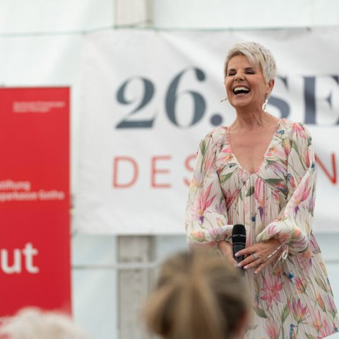

Kreisseniorentag 2025 in Ohrdruf – x@motion Medienproduktion erneut als Medienpartner dabei

Auch 2025 waren wir von x@motion Medienproduktion wieder mit voller Leidenschaft dabei, als der 26. Kreisseniorentag des Landkreises Gotha in Ohrdruf stattfand. Gemeinsam mit Sebastian Spelda Fotografie haben wir im Auftrag der Regionalstiftung der Kreissparkasse Gotha diesen besonderen Tag in bewegten Bildern festgehalten. Unser Ziel: die schönsten Momente, Begegnungen und Emotionen dieses großen Treffens für die Seniorinnen und Senioren des Landkreises festzuhalten – authentisch, nahbar und hochwertig produziert.
Ein Tag für Begegnung, Austausch und Erlebnisse
Am 21. August 2025 öffnete der Schlosspark Ehrenstein in Ohrdruf seine Tore für über 1.500 Besucherinnen und Besucher. Schon am Morgen kamen die ersten Busse aus dem gesamten Landkreis an, um einen Tag voller Programm zu erleben. Landrat Onno Eckert begrüßte die Gäste offiziell, bevor es mit Exkursionen, Marktständen und einem abwechslungsreichen Bühnenprogramm losging.
Als Medienpartner konnten wir von Anfang an dabei sein: von der Ankunft der Gäste über die herzlichen Begrüßungen bis hin zu den entspannten Momenten im Park – unsere Kameras haben diese besondere Atmosphäre eingefangen.
Exkursionen, Marktstände und Kulturprogramm
Besonders beliebt waren die insgesamt 18 Exkursionen: ob Besichtigungen von Unternehmen wie Storck, Touren durch die Thüringeti oder spannende Ortsführungen – für jeden Geschmack war etwas dabei. Im Park selbst erwartete die Besucherinnen und Besucher ein großer Markt mit regionalen Angeboten, Beratungsständen und kulinarischen Highlights.
Musikalischer Höhepunkt des Tages war der Auftritt von Linda Feller, die mit ihrer authentischen Art und ihren Songs für ausgelassene Stimmung sorgte. Für uns ein Highlight vor der Kamera, das die Begeisterung und Lebensfreude der Gäste perfekt widerspiegelte.
Unsere Medienproduktion beim Kreisseniorentag 2025
Unser Auftrag war klar: die Vielfalt dieses Tages sichtbar machen. Wir haben Bühnenauftritte, Marktleben, Begegnungen und Ausflüge in kurzen Clips und stimmungsvollen Bildern dokumentiert. Dabei achten wir immer darauf, nicht nur die Fakten, sondern auch die Emotionen einzufangen – damit der Kreisseniorentag auch in der Rückschau lebendig bleibt.
Dank an die Regionalstiftung der Kreissparkasse Gotha
Ein solches Event ist nur mit starker Unterstützung möglich. Die Regionalstiftung der Kreissparkasse Gotha hat erneut die Finanzierung übernommen und damit maßgeblich ermöglicht, dass dieser Tag kostenfrei für alle Seniorinnen und Senioren stattfinden konnte.
Fazit: Ein rundum gelungener Tag – festgehalten von x@motion
Der 26. Kreisseniorentag 2025 war ein voller Erfolg – ein Tag, an dem Gemeinschaft spürbar war und viele schöne Begegnungen möglich wurden. Für uns von x@motion Medienproduktion ist es immer wieder eine besondere Aufgabe, diese Momente filmisch festzuhalten und so dafür zu sorgen, dass sie noch lange in Erinnerung bleiben.
Wir freuen uns schon jetzt darauf, auch künftige Kreisseniorentage medial zu begleiten und die Geschichten der Menschen vor der Kamera sichtbar zu machen.
Video ansehen